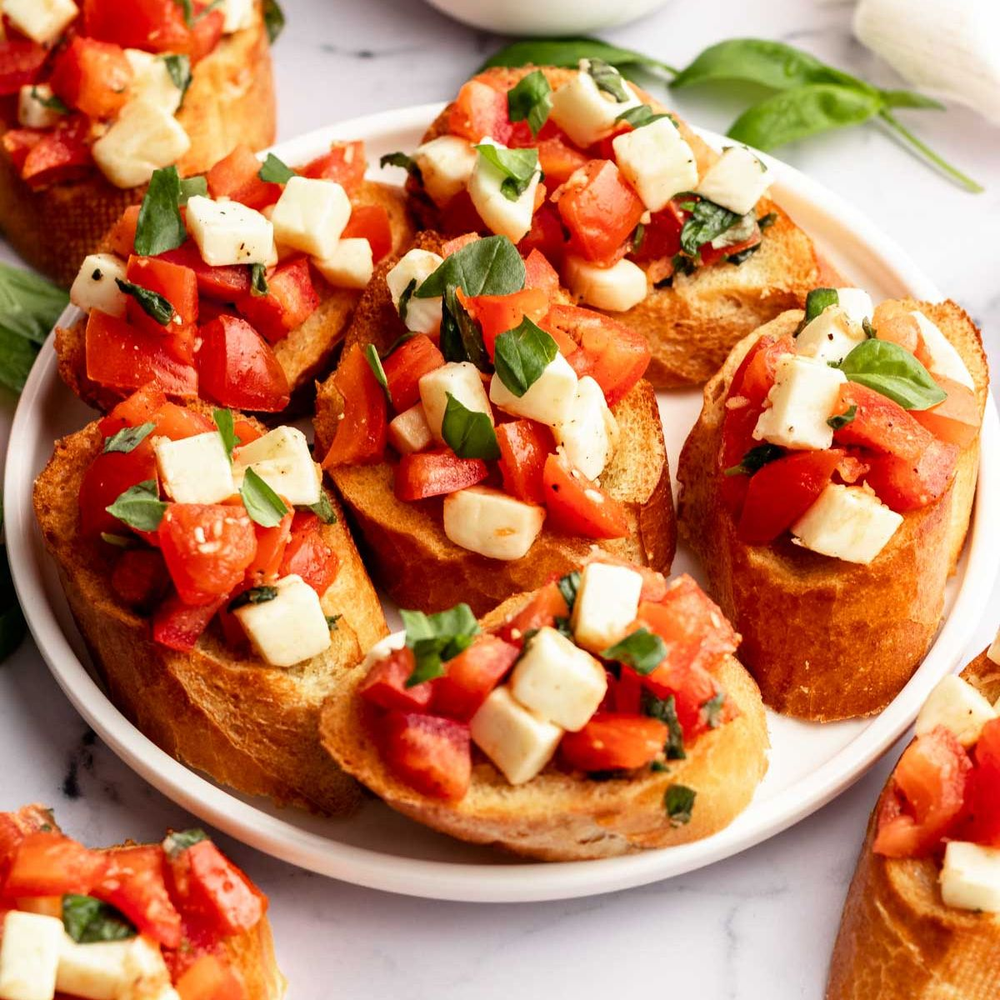

- Antipasti (Appetizers):
- Bruschetta al Pomodoro: Toasted bread topped with fresh tomatoes, garlic, basil, and drizzled with extra-virgin olive oil.
- Calamari Fritti: Crispy fried calamari served with marinara sauce.
- Caprese Salad: Slices of ripe tomatoes, fresh mozzarella, basil leaves, and balsamic glaze.
- Minestrone Soup: Hearty vegetable soup with pasta and beans.
- Primi Piatti (First Courses):
- Spaghetti Carbonara: Spaghetti tossed with eggs, pancetta, Pecorino Romano cheese, and black pepper.
- Ravioli al Tartufo: Homemade ravioli stuffed with truffle-infused ricotta cheese, served in a creamy truffle sauce.
- Linguine alle Vongole: Linguine pasta with fresh clams, garlic, white wine, and a touch of red pepper flakes.
- Gnocchi al Pesto: Potato gnocchi in a vibrant basil pesto sauce with pine nuts and Parmesan cheese.
- Secondi Piatti (Main Courses):
- Osso Buco: Slow-cooked veal shank served with saffron risotto.
- Pollo Marsala: Chicken breast sautéed with mushrooms in a Marsala wine sauce, served with roasted potatoes.
- Bistecca alla Fiorentina: Grilled T-bone steak seasoned with olive oil, rosemary, and garlic.
- Salmone all'Arancia: Baked salmon fillet with orange glaze, accompanied by steamed asparagus.
- Contorni (Side Dishes):
- Insalata Mista: Mixed greens with balsamic vinaigrette.
- Patate al Rosmarino: Roasted rosemary potatoes.
- Rapini all'Aglio: Sautéed broccoli rabe with garlic and red pepper flakes.
- Dolci (Desserts):
- Tiramisu: A classic Italian dessert made with layers of coffee-soaked ladyfingers and mascarpone cheese.
- cannoli Siciliani: Crispy pastry shells filled with sweet ricotta cheese, chocolate chips, and candied orange peel.
- Panna Cotta: Creamy vanilla custard topped with a berry compote.
- Gelato: A selection of homemade Italian ice creams and sorbets.
- Bevande (Beverages):
- Vino: A curated wine list featuring Italian wines from various regions.
- Acqua Minerale: Bottled mineral water.
- Caffè Espresso: Italian-style espresso.
- Digestivo: A selection of Italian liqueurs, including Limoncello and Amaro.